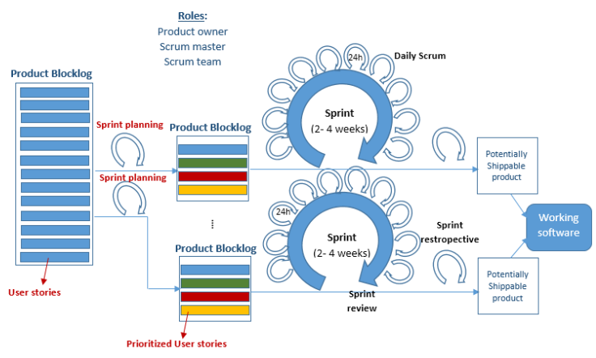

O Scrum é um método ágil interativo e incrmental utilizado no gerenciamento de projetos de software. Com o Scrum é possível estabelecer funções específicas e organizar o trabalho em ciclos curtos e limitados (sprints). Durante as interações o sistema é desenvolvido de forma incremental, resultando na criaão de artefatos que coordenam o trabalho em equipe.
O ciclo de vida do Scrum é dividio em três fases. A fase inicial (Inception) é dedicada ao planejamento geral, definição de metas e produção do Product Backlog, onde são priorizadas as estórias de usuário.
Em seguida, ocorre a fase de desenvolvimento, composta por sprints de 2 a 4 semanas, que incluem o planejameto das tarefas (Sprint Planning), a execução da sprint com reunioões diárias (Daily Scrum) para alinhamento e ao final de cada sprint, a revisão (Sprint review) e retorspectiva (Sprint retorspective) que servem com intuíto de avaliar os resultados e identificar melhorias
A últma fase é a de encerramento e entrega do projeto. Somente quando todos os objetivos e requisitos são alcançado, é que o produto é preparado para o lançamento e a documentação é finalizada.
